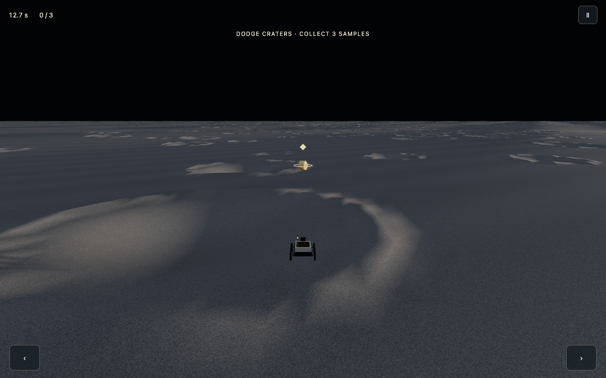
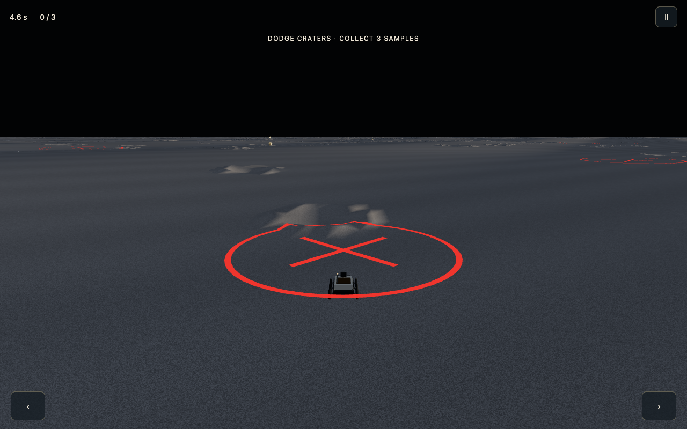
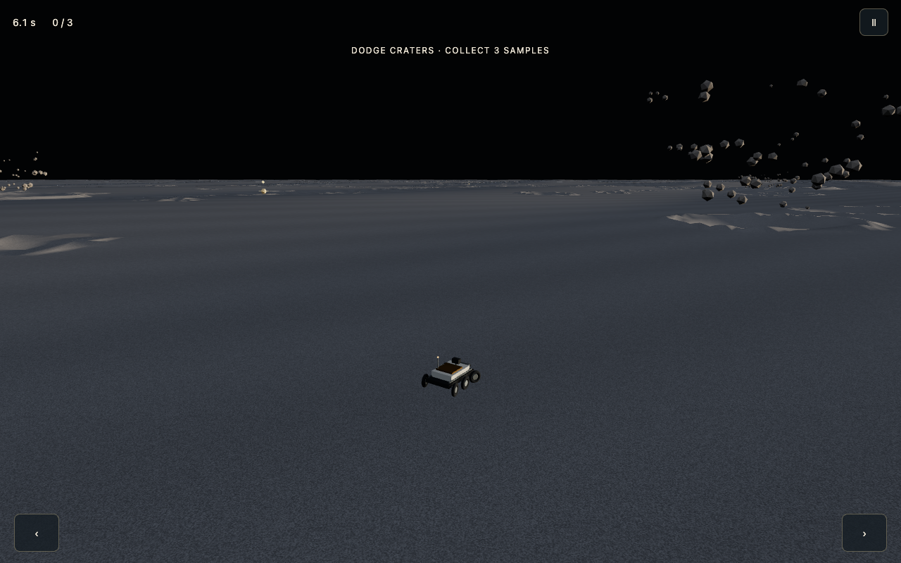

Terminator Zone — approved layout and constructed thermal course
October 7, 2026. Q5 is settled: Brian approved the proposed layout and run-ending thermal failure with immediate Retry. No automatic inward rescue. The alternative discussed earlier is historical and rejected, not a pending choice. This applies to Mercury Terminator Zone; it does not revise Wet Jezero's boundary.
Constructed pass
The course keeps the approved left → right → center collection rhythm and 2 km forward traversal. Three samples now sit on ordinary slopes/crater margins at (-48, -338), (66, -974), and (-2, -1643) internal metres. The former flattened sensor stations, circular aprons and narrow driving-strip boundary are absent. Collection is by proximity while driving; there is no deployment action.

Present day has 360 static craters, with at least ten metres between neighboring rim footprints except the explicitly placed anchors, which are also separated. A seeded scatter supplies different sizes and readable gaps. Bombardment starts with 180 of those craters, including the three small rim-jump features and sample landmarks. It is a different activity rhythm, not merely a recolored present day.
The standalone terrain uses one welded variable-resolution grid and one gray regolith material across the playable shoulders. Physics and rendering sample the same authored height function. The old ±118 m steering clamp is gone; thermal failure happens well inside the rendered outer terrain. Campaign terrain, stations, handling and records remain separate.
Bombardment
Every five seconds brings one committed nearby strike plus three staggered background strikes. Each warning is a flashing red circle with an X for two seconds. The target stays fixed after warning; moving the rover cannot drag it. An incoming projectile strikes, a brief localized flash occurs, debris follows ballistic arcs at Mercury gravity, and an excavated bowl/rim remains in the collision and rendered terrain. This is not an atmospheric smoke/fire storm. Reduced-motion mode keeps steady warnings and omits the impact flash.
An impact hit retains the existing slowdown and 35-point penalty. Sparse static terrain gives room to react while repeated impacts and overlapping ejecta bring the requested intensity. Five-second cadence, warning time, excavation scale and predicted path targets are game compression, not a reconstructed bombardment rate. No exact ancient date or particular historical impact is claimed.
Temperature and consequences
A small contextual instrument appears during exposure. It reports dimensionless electronics heat/cold stress and an inward cue, not ambient-air temperature. Farther sunward heats faster; farther into long-dark ground cools faster. The state accumulates and settles gradually. A brief excursion can be corrected with ordinary steering; crossing toward the center does not erase thermal history. At the operating limit, the vehicle stops and the run ends. Retry starts a fresh run. There is no teleport, automatic steering, inward rescue, or record for a failed run. All movement controls and small airborne strafe jets are retained.
Heat and cold: what is science and what is game compression
Mercury's daytime surface can reach about 430°C and nighttime surface about −180°C. Its very thin exosphere does not transport heat like Earth's atmosphere; a solar day lasts about 176 Earth days. These are planet-scale conditions, not an instantaneous temperature step across our 236 m driving strip. NASA Mercury facts
The terminator is a lighting boundary, not a fixed safe-temperature contour. Surface cooling takes time, local slope/shadow matters, and a vehicle's internal temperature also responds over time. At sunset, newly dark ground need not be immediately deep-night cold. The exact safe operating band would depend on the vehicle's thermal design, which is fictional here. Mariner 10 nighttime cooling observations and NASA surface-lander thermal design support treating surface conditions and electronics temperature separately.
Implemented abstraction: continuous solar exposure and elapsed-darkness profiles feed a slowly changing vehicle thermal state. Farther sunward causes faster heating; farther into long-dark terrain causes faster cooling. Brief excursions are manageable; increasing distance and sustained exposure become dangerous. Returning toward the operating band reverses the trend gradually. Crossing an imaginary centerline never instantly clears accumulated temperature.
Expose only a small contextual heat/cold indicator when outside the comfortable operating range, with a clear inward cue and escalating warning. Use no fake ambient-air thermometer and no simulated wind, frost, glowing-hot regolith or heat haze suggesting an Earthlike atmosphere. Show terrain shadows naturally. Label distance/time compression as game design in pause/Encyclopedia copy. Do not claim exact failure seconds, scientific temperatures at authored x values, or proven fun before implementation and playtesting.
Graphics and startup audit
Removed the old station terrain flattening, mismatched shoulder generation, repeated terrain layers and decorative gridded star field from the standalone course. Reused the established regolith texture and rover. The new base terrain has 358,345 grid vertices, versus over one million in the previous layered world. Crater lookup is spatially indexed; new impacts update intersecting terrain tiles. Local browser measurements put world construction around 344 ms in Chromium and 423 ms in WebKit on this development machine. These are construction timings, not network-to-play or physical-phone load-time guarantees.
The approved sketch was the production composition reference; captures below show actual gameplay, with the samples embedded in rough terrain and a distinct impact presentation.



Compatibility and verification
Current records use v3 identities per era. Sensor-course v1 and sample-course v2 records remain stored and visible as history; neither competes with the changed course. E-cards, date-following sunset anchoring, era choice, split touch controls, pause and caller-aware Back remain available. The campaign uses its original sensor course and receives no standalone thermal or bombardment changes.
Tests cover two-second warnings/five-second cadence, fixed targeting, crater excavation persistence, once-only blast damage, no paused aging, both thermal failures without rescue, gradual cooling, collection, small jumps, steering, course completion and v1/v2/v3 record history. Browser checks inspect desktop, phone and tablet views, effects, retry, pause and navigation. Feasibility and rendering checks do not establish fun or final balance.
P4 — optional producer playtest
First play Present day: collect the three objects, try a low rim jump, then take a deliberate outward excursion to see the warning and Retry consequence. Does the terrain feel continuous, and do the samples feel placed along a course?
Then play Bombardment: dodge one red warning, take one impact, and watch the horizon. Are two seconds readable and fair? Does it feel like a sustained impact storm, with enough steering room and a clear difference from Present day? Note any stalls at impact, overly empty stretches or visually artificial crater edges. Q5 is settled; these are optional feel/polish observations, not another approval.